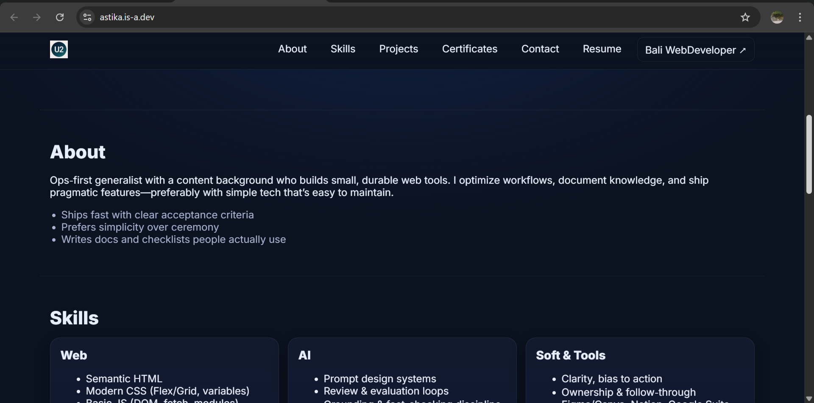
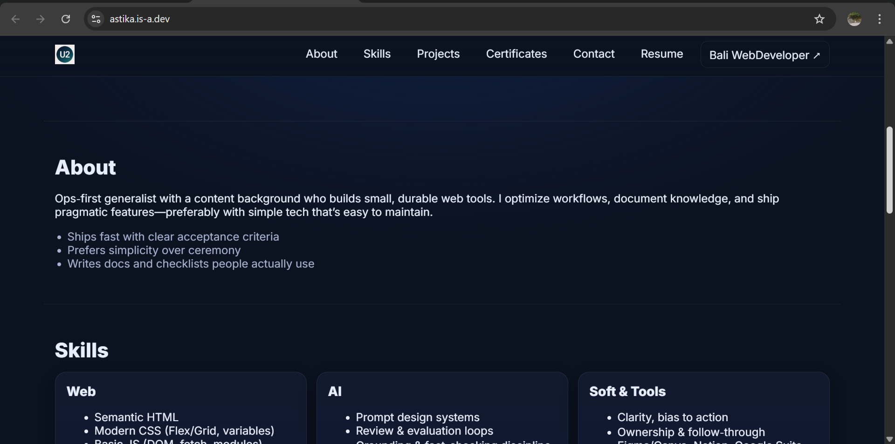

MiniTools


Collection of small utilities (UI polish, clean code). Deployed on GitHub Pages.
View
Collection of small utilities (UI polish, clean code). Deployed on GitHub Pages.
View
Unified SOP/QA kit: checklists, incident notes, and audit templates.
View 

Refined personal portfolio with better structure, accessibility and SEO.
LivefreeCodeCamp — Front End Development Libraries
View CertificatefreeCodeCamp — Responsive Web Design
View CertificatefreeCodeCamp — Javascript Algorithms and Data Structures
View Certificate